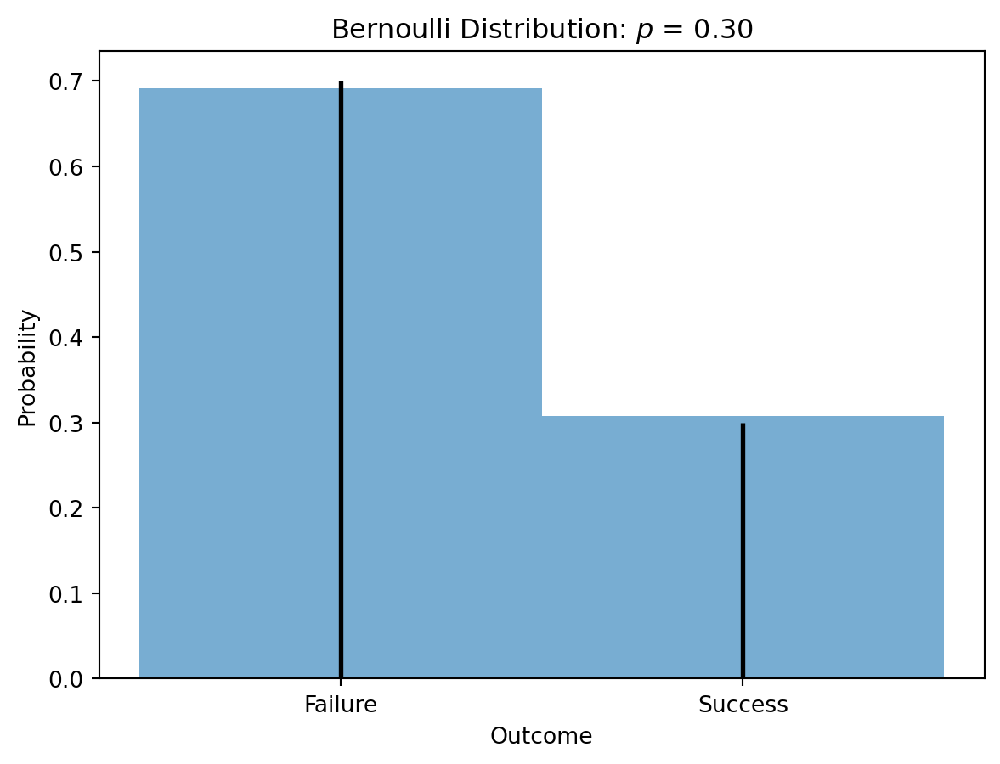
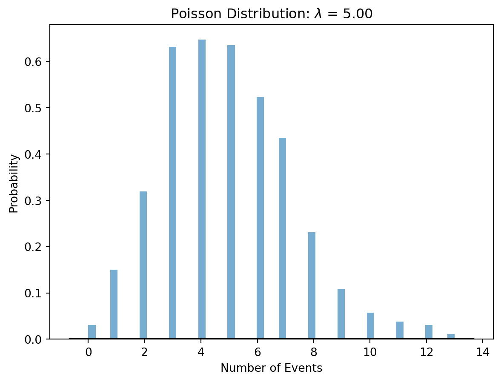
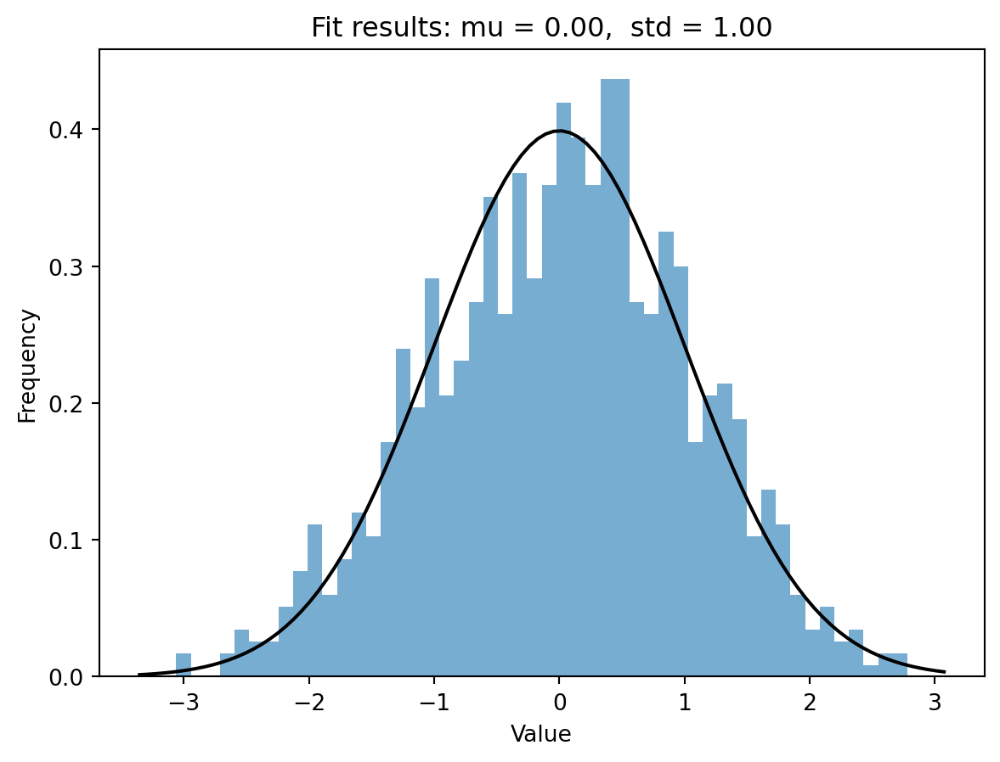

Machine learning often involves the use of probability theory and random variables to model uncertainty, make predictions, and make decisions. Let’s break down some key concepts in this context.
Basic concepts
Broadly speaking, probability theory is the mathematical study of uncertainty. It plays a central role in machine learning, as the design of learning algorithms often relies on probabilistic assumption of the data. This set of notes attempts to cover some basic probability theory that serves as a background for the class.
Probability Theory
In machine learning, probability is used to quantify uncertainty. It is a measure of the likelihood that a particular event will occur. Probabilities range from 0 (impossible event) to 1 (certain event). In the context of machine learning, probabilities are often associated with outcomes of interest.
Conditional Probability. This is the probability of an event occurring given that another event has already occurred. In machine learning, understanding conditional probability is crucial, especially in Bayesian methods.
Bayesian Inference. It is an approach to statistical inference where Bayes’ theorem is used to update the probability for a hypothesis as more evidence or information becomes available.
Probability Space
When we speak about probability, we often refer to the probability of an event of uncertain nature taking place. For example, we speak about the probability of rain next Tuesday.
Formally, a probability space is defined by the triple \((\Omega, \mathcal{F}, P)\), where
\(\Omega\) is the space of possible outcomes (or outcome space),
\(\mathcal{F} \subseteq 2^{\Omega}\) is the space of (measurable) events (or event space),
\(P\) is the probability measure (or probability distribution) that maps an event \(E \in \mathcal{F}\) to a real value between 0 and 1 (think of \(P\) as a function).
Random Variables
Random variables play an important role in probability theory. The most important fact about random variables is that they are not variables. They are actually functions that map outcomes (in the outcome space) to real values. In terms of notation, we usually denote random variables by a capital letter
In machine learning, random variables are used to model uncertainty in various processes.
Discrete Random Variables. These take on a countable number of distinct values. For example, the outcome of rolling a die is a discrete random variable.
Continuous Random Variables. These can take any value within a range. Examples include the height of a person or the temperature at a given time.
Probability Distributions, Joint Distributions, and Marginal Distributions
A probability distribution describes how the values of a random variable are distributed. In machine learning, probability distributions are used to model uncertainty in data and parameters.
Joint Distribution describes the probability of multiple random variables occurring simultaneously.
Marginal Distribution describes the probability distribution of a subset of random variables without reference to the values of the other variables.
Conditional distributions are one of the key tools in probability theory for reasoning about uncertainty. They specify the distribution of a random variable when the value of another random variable is known (or more generally, when some event is known to be true).
Bernoulli distribution
The Bernoulli distribution is one of the most basic distribution. A random variable distributed according to the Bernoulli distribution can take on two possible values, {0, 1}. It is often used to indicate whether a trail is successful or not.
Code
```{python}#| fig-cap: "Bernoulli distribution"import numpy as npimport matplotlib.pyplot as pltfrom scipy.stats import bernoulli# Set the mean rate for the Poisson distributionp =0.3# Generate data for a Bernoulli distributiondata = np.random.choice([0, 1], size=1000, p=[1- p, p])# Create a histogramplt.hist(data, bins=[-0.5, 0.5, 1.5], density=True, alpha=0.6)# Plot the probability mass function (PMF) of the Bernoulli distributionx = [0, 1]pmf_values = bernoulli.pmf(x, p)plt.vlines(x, 0, pmf_values, colors='k', linestyles='-', lw=2)# Add labels and a titleplt.title('Bernoulli Distribution: $p$ = %.2f'% p)plt.xlabel('Outcome')plt.ylabel('Probability')plt.xticks([0, 1], ['Failure', 'Success'])plt.show()```

Bernoulli distribution
Poisson distribution
The Poisson distribution is a very useful distribution that deals with the arrival of events. It measures probaiblity of the number of events happening over a fixed period of time, given a fixed average rate of occurrence, and that the events take place independently of the time since the last event.
Code
```{python}#| fig-cap: "Poisson distribution"import numpy as npimport matplotlib.pyplot as pltfrom scipy.stats import poisson# Set the mean rate for the Poisson distributionlam =5# Generate data for a Poisson distributiondata = np.random.poisson(lam, 1000)# Create a histogramplt.hist(data, bins=50, density=True, alpha=0.6)# Plot the probability mass function (PMF) of the Poisson distributionxmin, xmax = plt.xlim()x = np.linspace(xmin, xmax, 100)p = poisson.pmf(x, lam)plt.plot(x, p, 'k', linewidth=2)# Add labels and a titleplt.title('Poisson Distribution: $\lambda$ = %.2f'% lam)plt.xlabel('Number of Events')plt.ylabel('Probability')plt.show()```

Poisson distribution
Gaussian distribution
The Gaussian distribution, also known as the normal distribution, is one of the most “versatile” distributions in probability theory, and appears in a wide variety of contexts. For example, it can be used to approximate the binomial distribution when the number of experiments is large, or the Poisson distribution when the average arrival rate is high. It is also related to the Law of Large Numbers. For many problems, we will also often assume that when noise in the system is Gaussian distributed. The list of applications is endless.
Code
```{python}#| fig-cap: "Gussian distribution"import numpy as npimport matplotlib.pyplot as pltfrom scipy.stats import normmu =0# meansigma =1# standard deviation# Generate data for a Gaussian distributiondata = np.random.normal(mu, sigma, 1000)# Create a histogramplt.hist(data, bins=50, density=True, alpha=0.6)# Plot the probability density function (PDF) of the Gaussian distributionxmin, xmax = plt.xlim()x = np.linspace(xmin, xmax, 100)p = norm.pdf(x, mu, sigma)plt.plot(x, p, 'k')# Add labels and a titleplt.title('Fit results: mu = %.2f, std = %.2f'% (mu, sigma))plt.xlabel('Value')plt.ylabel('Frequency')plt.show()```

Gussian distribution
Defining a Probability Distribution
There are two classes of distribution that require seemingly different treatments. Namely, discrete distributions and continuous distributions.
Discrete Distribution
By a discrete distribution, we mean that the random variable of the underlying distribution can take on only finitely many different values (or that the outcome space is finite). Examples include the binomial distribution (for binary outcomes) and the Poisson distribution (for count data).
Continuous Distribution
By a continuous distribution, we mean that the random variable of the underlying distribution can take on infinitely many different values (or that the outcome space is infinite). Examples include the normal distribution (bell-shaped curve) and the exponential distribution.
Expectations and Variance
One of the most common operations we perform on a random variable is to compute its expectation, also known as its mean, expected value, or first moment. The expectation is the average value of a random variable. In machine learning, it’s often used to summarize the central tendency of a distribution.
Variance measures how spread out the values of a random variable are. It gives a sense of the dispersion of data. Sometimes it is also referred to as the second moment.
Conclusion
Understanding probability theory and random variables is crucial for various machine learning tasks, including classification, regression, and reinforcement learning. Probabilistic models provide a natural framework for dealing with uncertainty in real-world data.
Source Code
---execute: echo: fencedtitle: "Probability theory and random variables"toc: truetoc-title: "Table of Contents"title-block-banner: false---Machine learning often involves the use of probability theory and random variables to model uncertainty, make predictions, and make decisions. Let's break down some key concepts in this context.## Basic conceptsBroadly speaking, probability theory is the mathematical study of uncertainty. It plays a central role in machine learning, as the design of learning algorithms often relies on probabilistic assumption of the data. This set of notes attempts to cover some basic probability theory that serves as a background for the class.### Probability TheoryIn machine learning, probability is used to quantify uncertainty. It is a measure of the likelihood that a particular event will occur. Probabilities range from 0 (impossible event) to 1 (certain event). In the context of machine learning, probabilities are often associated with outcomes of interest.**Conditional Probability.** This is the probability of an event occurring given that another event has already occurred. In machine learning, understanding conditional probability is crucial, especially in Bayesian methods.**Bayesian Inference.** It is an approach to statistical inference where Bayes' theorem is used to update the probability for a hypothesis as more evidence or information becomes available.### Probability SpaceWhen we speak about probability, we often refer to the probability of an event of uncertain nature taking place. For example, we speak about the probability of rain next Tuesday.Formally, a *probability space* is defined by the triple $(\Omega, \mathcal{F}, P)$, where* $\Omega$ is the *space of possible outcomes* (or *outcome space*),* $\mathcal{F} \subseteq 2^{\Omega}$ is the *space of (measurable) events* (or *event space*),* $P$ is the probability measure (or probability distribution) that maps an event $E \in \mathcal{F}$ to a real value between 0 and 1 (think of $P$ as a function).### Random VariablesRandom variables play an important role in probability theory. The most important fact about random variables is that they are **not** variables. They are actually **functions** that map outcomes (in the outcome space) to real values. In terms of notation, we usually denote random variables by a capital letterIn machine learning, random variables are used to model uncertainty in various processes.Discrete Random Variables. These take on a countable number of distinct values. For example, the outcome of rolling a die is a discrete random variable.Continuous Random Variables. These can take any value within a range. Examples include the height of a person or the temperature at a given time.### Probability Distributions, Joint Distributions, and Marginal DistributionsA probability distribution describes how the values of a random variable are distributed. In machine learning, probability distributions are used to model uncertainty in data and parameters.**Joint Distribution** describes the probability of multiple random variables occurring simultaneously.**Marginal Distribution** describes the probability distribution of a subset of random variables without reference to the values of the other variables.**Conditional distributions** are one of the key tools in probability theory for reasoning about uncertainty. They specify the distribution of a random variable when the value of another random variable is known (or more generally, when some event is known to be true).### Bernoulli distributionThe *Bernoulli distribution* is one of the most basic distribution. A random variable distributed according to the Bernoulli distribution can take on two possible values, {0, 1}. It is often used to indicate whether a trail is successful or not.```{python}#| fig-cap: "Bernoulli distribution"import numpy as npimport matplotlib.pyplot as pltfrom scipy.stats import bernoulli# Set the mean rate for the Poisson distributionp =0.3# Generate data for a Bernoulli distributiondata = np.random.choice([0, 1], size=1000, p=[1- p, p])# Create a histogramplt.hist(data, bins=[-0.5, 0.5, 1.5], density=True, alpha=0.6)# Plot the probability mass function (PMF) of the Bernoulli distributionx = [0, 1]pmf_values = bernoulli.pmf(x, p)plt.vlines(x, 0, pmf_values, colors='k', linestyles='-', lw=2)# Add labels and a titleplt.title('Bernoulli Distribution: $p$ = %.2f'% p)plt.xlabel('Outcome')plt.ylabel('Probability')plt.xticks([0, 1], ['Failure', 'Success'])plt.show()```### Poisson distributionThe *Poisson distribution* is a very useful distribution that deals with the arrival of events. It measures probaiblity of the number of events happening over a fixed period of time, given a fixed average rate of occurrence, and that the events take place independently of the time since the last event.```{python}#| fig-cap: "Poisson distribution"import numpy as npimport matplotlib.pyplot as pltfrom scipy.stats import poisson# Set the mean rate for the Poisson distributionlam =5# Generate data for a Poisson distributiondata = np.random.poisson(lam, 1000)# Create a histogramplt.hist(data, bins=50, density=True, alpha=0.6)# Plot the probability mass function (PMF) of the Poisson distributionxmin, xmax = plt.xlim()x = np.linspace(xmin, xmax, 100)p = poisson.pmf(x, lam)plt.plot(x, p, 'k', linewidth=2)# Add labels and a titleplt.title('Poisson Distribution: $\lambda$ = %.2f'% lam)plt.xlabel('Number of Events')plt.ylabel('Probability')plt.show()```### Gaussian distributionThe *Gaussian distribution*, also known as the *normal distribution*, is one of the most “versatile” distributions in probability theory, and appears in a wide variety of contexts. For example, it can be used to approximate the binomial distribution when the number of experiments is large, or the Poisson distribution when the average arrival rate is high. It is also related to the Law of Large Numbers. For many problems, we will also often assume that when noise in the system is Gaussian distributed. The list of applications is endless.```{python}#| fig-cap: "Gussian distribution"import numpy as npimport matplotlib.pyplot as pltfrom scipy.stats import normmu =0# meansigma =1# standard deviation# Generate data for a Gaussian distributiondata = np.random.normal(mu, sigma, 1000)# Create a histogramplt.hist(data, bins=50, density=True, alpha=0.6)# Plot the probability density function (PDF) of the Gaussian distributionxmin, xmax = plt.xlim()x = np.linspace(xmin, xmax, 100)p = norm.pdf(x, mu, sigma)plt.plot(x, p, 'k')# Add labels and a titleplt.title('Fit results: mu = %.2f, std = %.2f'% (mu, sigma))plt.xlabel('Value')plt.ylabel('Frequency')plt.show()```## Defining a Probability DistributionThere are two classes of distribution that require seemingly different treatments. Namely, *discrete* distributions and *continuous* distributions.### Discrete DistributionBy a discrete distribution, we mean that the random variable of the underlying distribution can take on only finitely many different values (or that the outcome space is finite). Examples include the binomial distribution (for binary outcomes) and the Poisson distribution (for count data).### Continuous DistributionBy a continuous distribution, we mean that the random variable of the underlying distribution can take on infinitely many different values (or that the outcome space is infinite). Examples include the normal distribution (bell-shaped curve) and the exponential distribution.## Expectations and VarianceOne of the most common operations we perform on a random variable is to compute its *expectation*, also known as its *mean*, *expected value*, or *first moment*. The expectation is the average value of a random variable. In machine learning, it's often used to summarize the central tendency of a distribution.*Variance* measures how spread out the values of a random variable are. It gives a sense of the dispersion of data. Sometimes it is also referred to as the *second moment*.## ConclusionUnderstanding probability theory and random variables is crucial for various machine learning tasks, including classification, regression, and reinforcement learning. Probabilistic models provide a natural framework for dealing with uncertainty in real-world data.